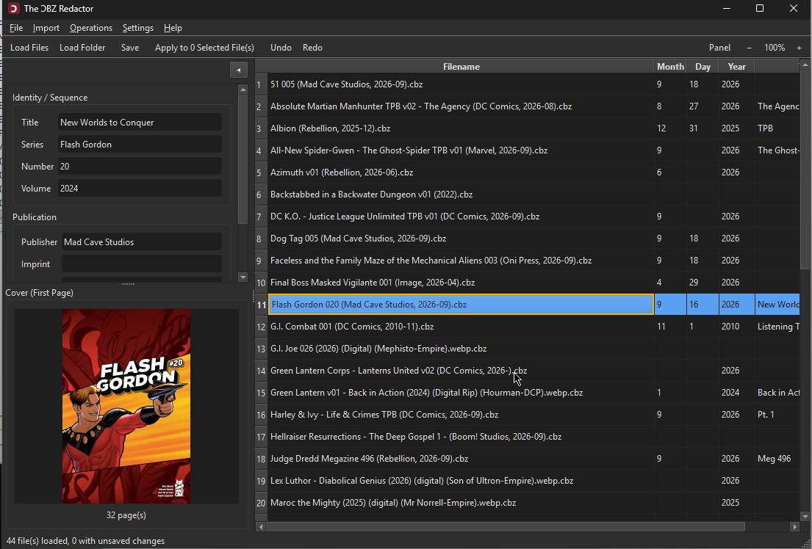

The ƆBZ Redactor
A free CBZ metadata editor for Windows — read and write ComicInfo.xml without touching the page images.

What a CBZ is
A CBZ file is a plain ZIP archive of sequentially-named comic page images, optionally with a ComicInfo.xml metadata file at its root — the de facto standard originating from ComicRack and documented by the Anansi Project. Not every CBZ has one; the ƆBZ Redactor creates one on save if it's missing, rather than requiring it up front. Its field handling was checked directly against ComicTagger's own source to stay compatible with what readers like Kavita actually expect.
Features
- Load one or many
.cbzfiles (or a whole folder) into a sortable, column-configurable table; multi-select for editing, saving, or looking up several issues at once. - Bulk edit the full ComicInfo.xml v2.0 field set, plus draft v2.1 fields already understood by ComicTagger and Kavita (Translator, Tags, StoryArcNumber, GTIN) — a field left blank is left untouched, not cleared.
- Metadata lookups against Comic Vine, the Grand Comics Database, and Bedetheque, each with a cover preview and a confirm-before-write review step.
- Overwrite review: any import that would replace metadata you already have shows old vs. new side by side, per field, per file, with a checkbox for exactly what to keep.
- Rename / Export Files and its reverse, Parse Filename → Metadata, both built on a
%series% %number% - %title%-style pattern using any ComicInfo field. - Search/Replace and Case Conversion across any field, with a before/after preview and a per-row apply checkbox.
- Undo (up to 5 steps) for in-memory metadata edits — bulk edits, lookups, renames, search/replace, and case conversion.
- Genre and Language quick-pick lists, drag-to-reorder and hideable columns, and a resizable cover-image panel — all persisted across restarts.
- Optional CBR → CBZ conversion on import.
Requirements
Windows, no separate Python install needed — the release is a standalone .exe. Full details and the changelog are in the GitHub repository.
The rest of the family
The ƆBZ Redactor shares its UI and core editing patterns with three sibling tools, via redactor_common: